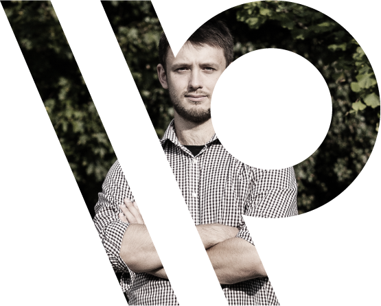

Po co?
\\\ improwizacja
Co zrobić, gdy czasu nie ma, a trzeba przedstawić siebie, produkt, opinię, dane? Trzeba improwizować, ale trzeba wiedzieć jak, aby było to przekonujące, pewnie powiedziane i logiczne.
\\\ krótko i treściwie
Po prostu nie ma czasu, do rzeczy i konkret. Jak ułożyć myśli i wybrać to, co najważniejsze.
\\\ pod presją
Łatwo jest rozmawiać przy stole z rodziną, ale w sytuacji jeżeli od tego zależy to czy zdobędziesz klienta, przekonaz do swojej racji albo do siebie, albo możesz wystawić się na pośmiewisko, bądź gdy masz przed sobą tłum ludzi z negatywnym nastawieniem a szef chce konkretu, bo nie ma czasu - to jest właśnie ten moment kiedy jest trudno. Warsztaty są o tym, jak sobie w takich sytuacjach radzić.
Autorska formuła
warsztatów
\\\ Dominik Mazur \ założyciel
Jestem z wykształcenia prawnikiem, specjalistą od kontaktów z mediami. Mam za sobą wiceprezesurę w jednym z największych polskich think tanków - Fundacji Republikańskiej. Prowadzę Warsztaty Retoryczne od 8 lat, pracowałem jako członek zespołów negocjacyjnych, pisałem ustawy jako prawnik legislator w Sejmie RP, inicjowałem i koordynowałem kilkanaście projektów analitycznych (w tym “Kierunki Promocji Polski dla MSZ, “Wolność słowa w Internecie” we współpracy z Google Polska i wiele innych). Prowadziłem szkolenia medialne dla Mediatorów oraz okazjonalnie współpracowałem z TedX Warsaw. Prowadziłem szkolenia dla różnych branży od dziennikarzy, poprzez IT, HR, do kandydatów na stanowiska publiczne oraz przedsiębiorców. Zdarza mi się komentować obecną sytuację polityczną i gospodarczą jako publicysta.
